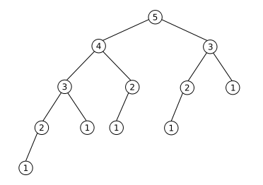

PyClass

Today
- Advanced Object-oriented Programming
Subclassing Built-in Objects: Default Dictionaries
import copy
class DefaultDict(dict):
"""Dictionary with a default value for unknown keys."""
def __init__(self, default):
self.default = default
def __getitem__(self, key):
if key in self:
return self.get(key)
else:
## Need copy in case self.default is something like []
return self.setdefault(key, copy.deepcopy(self.default))
def __copy__(self):
copy = DefaultDict(self.default)
copy.update(self)
return copy
d = DefaultDict(0)
d[2] = "a"
print d[1]
print d[2]
Fibonacci
def fib(x):
if x < 2: return x
return fib(x - 1) + fib(x - 2)
Running Time:
Speeding Up Fibonacci:
memo = {}
def fib(x):
global memo
if x in memo: return memo[x]
if x < 2: return x
val = fib(x - 1) + fib(x - 2)
memo[x] = val
return val
The memoize Decorator:
class memoize(object):
def __init__(self, func):
self.func = func
self.cache = {}
def __call__(self, *args):
try:
return self.cache[args]
except KeyError:
value = self.func(*args)
self.cache[args] = value
return value
@memoize
def fib(x):
if x < 2: return x
return fib(x - 1) + fib(x - 2)
Iterators:
range is a function, xrange is an iterator
class Counter:
def __init__(self, low, high):
self.current = low
self.high = high
def __iter__(self):
return self
def next(self):
if self.current > self.high:
raise StopIteration
else:
self.current += 1
return self.current – 1
for c in Counter(3, 8):
print c